Plataforma de relacionamento
BMC START
· SELECT · PRIVATE
Quem tem uma Hyundai da BMC é dono, não participante.
02 / A ideia do símbolo
Uma escavadeira que conta uma relação.
03 / Blueprint
O símbolo é uma relação desenhada.
- ① Lança — o dono: quem sustenta a obra.
- ② Braço e concha — a BMC: trabalha junto, no mesmo gesto.
- ③ Encaixe — a relação: nem acima, nem abaixo, junto.
- ④ Esteira — o chão da obra: tudo apoiado no trabalho real.
Grade 24 × 24 · ângulos de 0° e 45° · Archivo
02g / A arquitetura
Um símbolo, três níveis.
A mesma relação ganha nomes diferentes conforme a proximidade cresce.
A origem
Tudo começou em 2003.
Felipe Cavalieri, fundador da BMC Hyundai, foi à Coreia do Sul negociar com a Hyundai as primeiras empilhadeiras da marca vendidas no Brasil. Desde então, cada máquina entregue é a conquista de alguém que vive dela.
O problema
Depois da venda, quem cuida bem da máquina quase nunca é reconhecido.
E máquina parada custa caro. O relacionamento não pode terminar quando a chave muda de mão.
A intenção
Reconhecer quem é dono. Cuidar da máquina junto.
Esta plataforma acompanha a vida da máquina e a constância de quem mantém o trabalho em movimento.
Não é programa de pontos.
O nível se ganha cuidando.
12 / O começo
Pertencer.
“Tenho a BMC do meu lado.”
A porta de entrada para todo cliente BMC.13 / A constância
Constância.
“Minha máquina está sempre em dia.”
A relação se prova no tempo.14 / Ser conhecido
Ser conhecido.
“A BMC me conhece.”
Proximidade construída em cada cuidado.15 / O sistema
Firme, técnico, próximo.
10 / START · peças
O começo chega com clareza.
Boas-vindas no app e plaqueta em aço pintado.
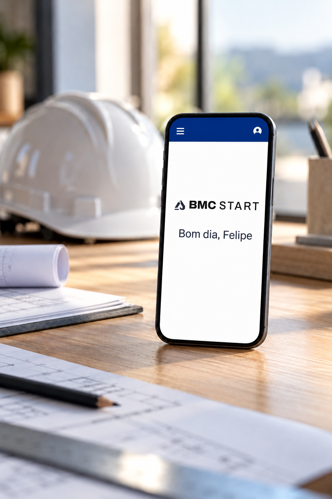
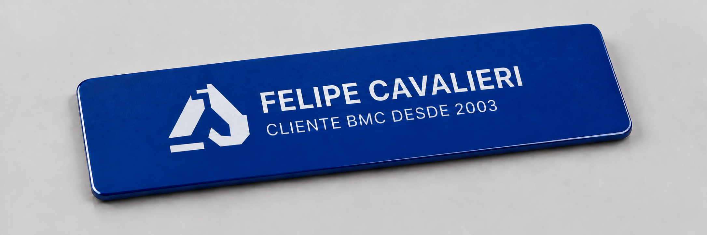
13 / SELECT · peças
A constância ganha forma.
Cartão, ingressos, colecionável e plaqueta em grafite e aço.
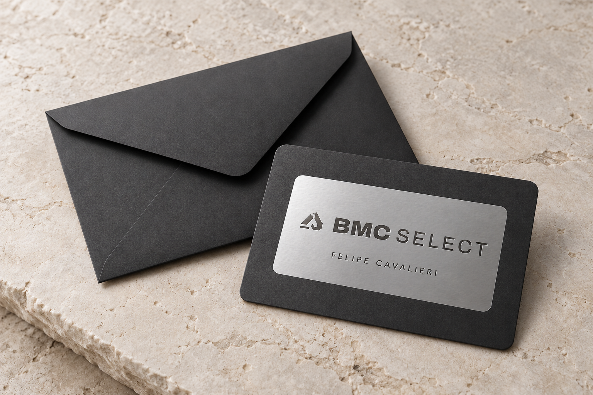
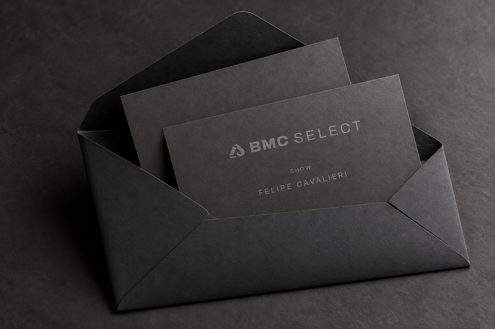
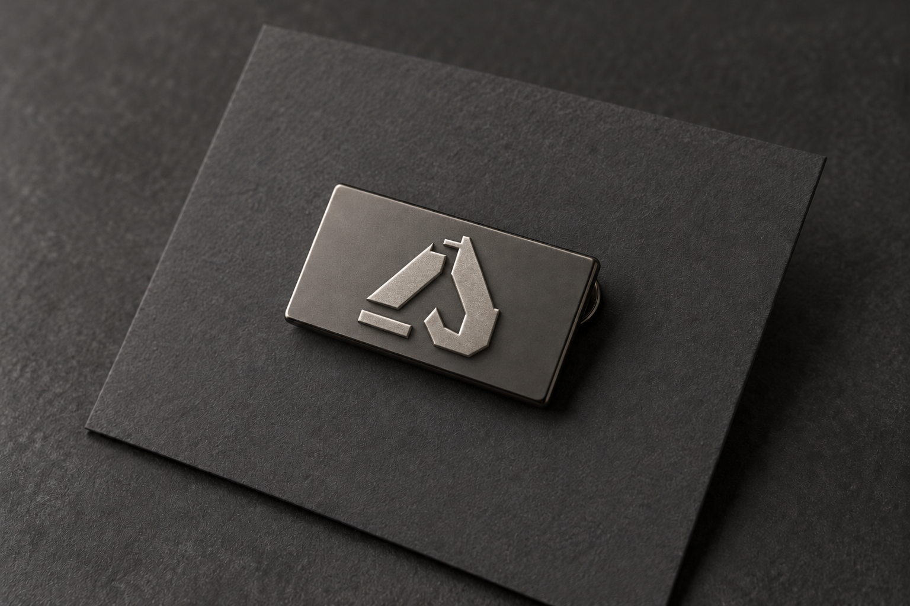
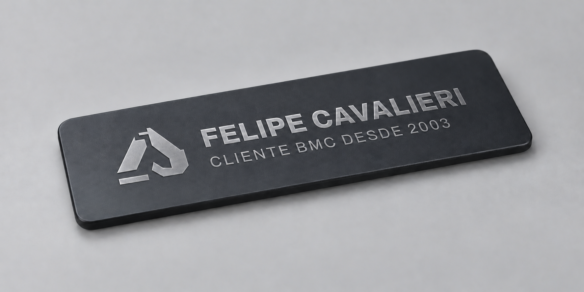
18 / PRIVATE · peças
A proximidade vira gesto.
Convite, caixa, vinho, show, jantar e medalha — materiais que chegam perto.
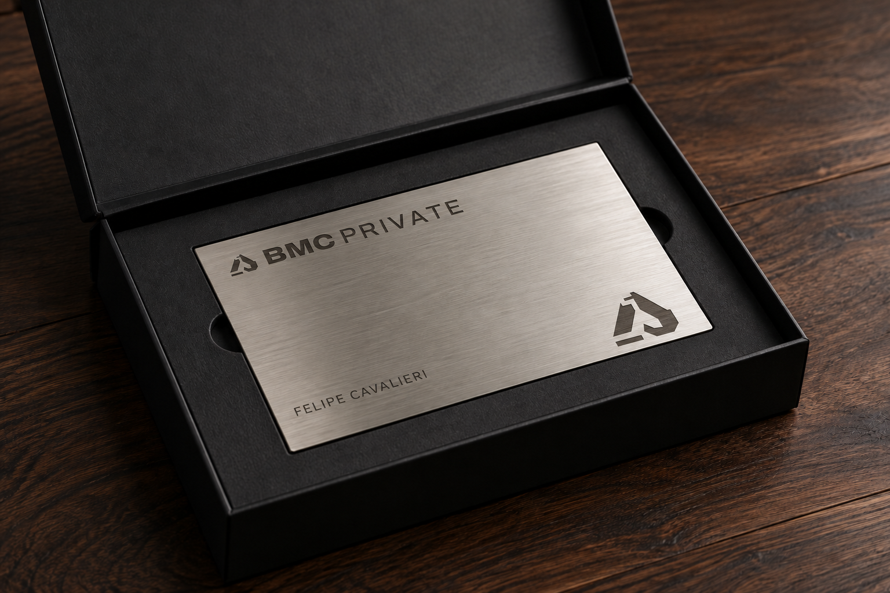
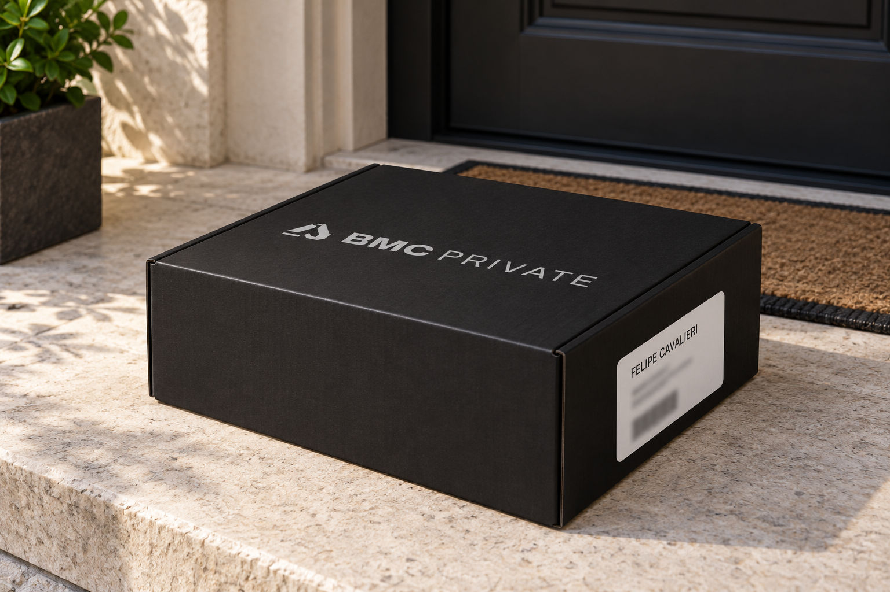
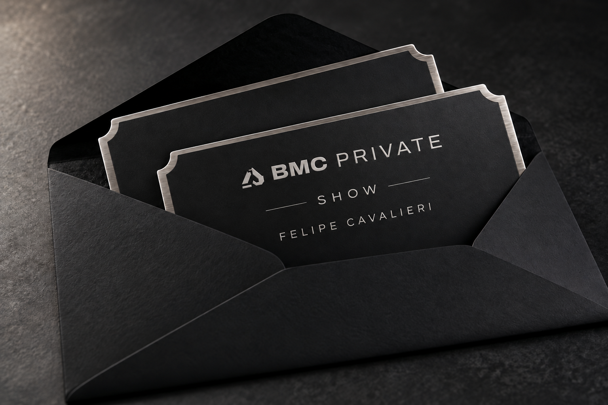
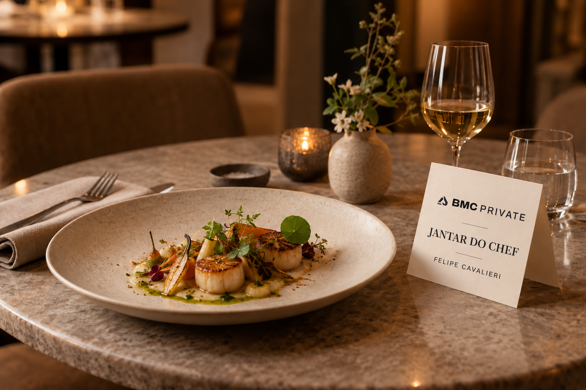
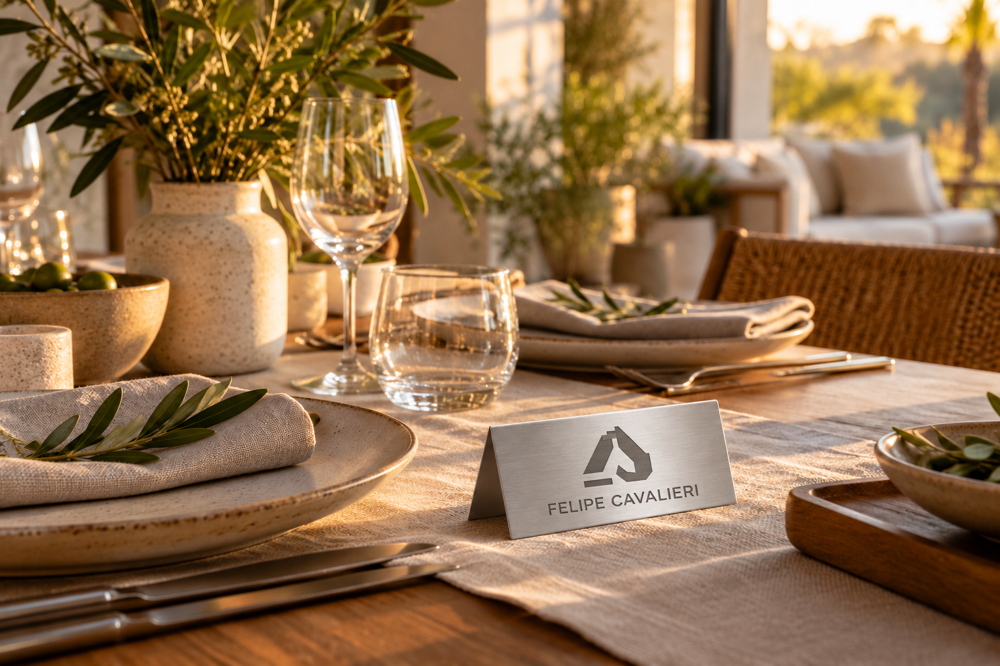
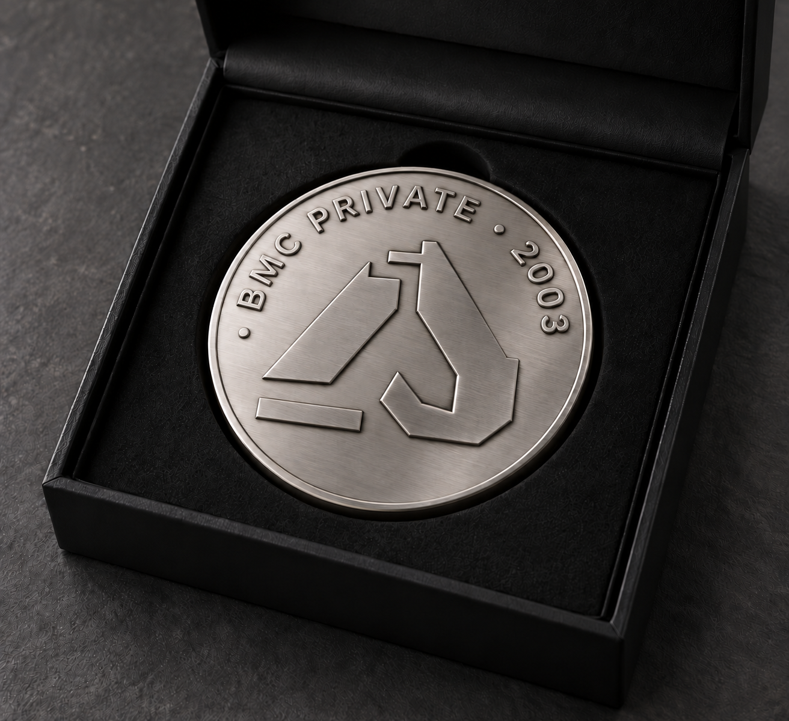
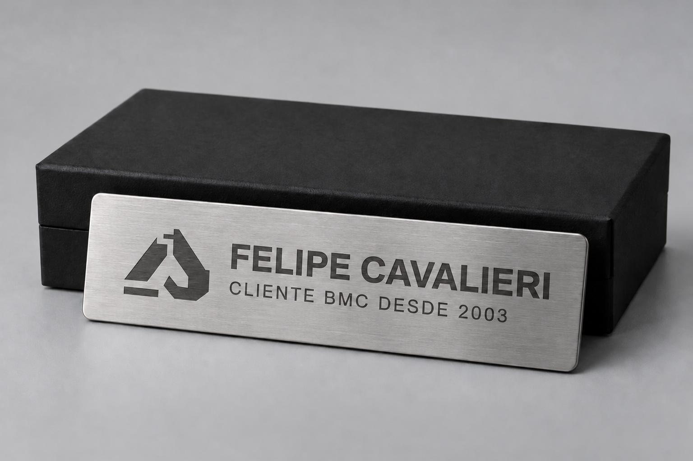
27 / Uma marca de tempo
Desde 2003.
A assinatura vive na peça. O vínculo vive no tempo.